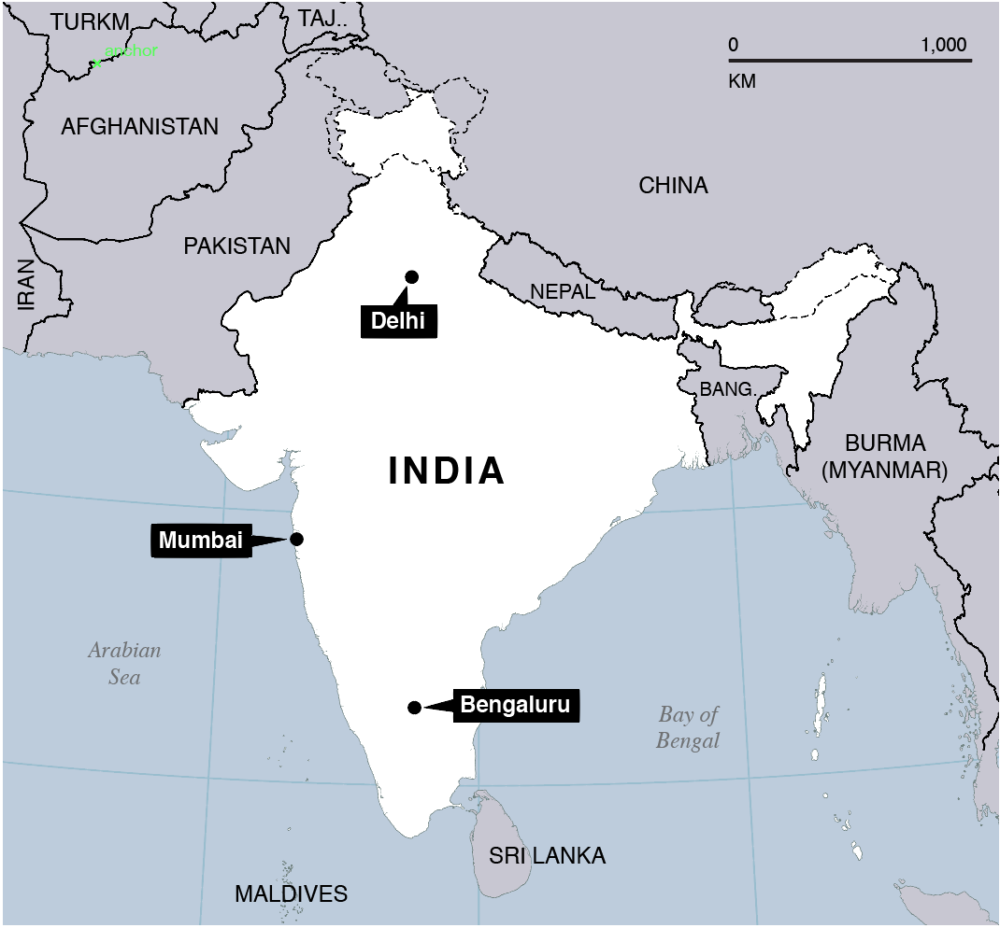

Data Quality 101
When measuring data quality, what exactly does that mean? One may try to formulate quantitative measures that identify a data set as superior by comparison, complete, accurate, consistent, and current. Additional measurement may focus on documentation, and source evaluation with respect to the reputation or authoritative nature of the data provider.
The original purpose of data collection and the original scale at which it was collected may also have bearing on the utility of the data for purposes beyond it's original intent. With this in mind, data quality may be measured with specific use cases in mind. For spatial data, a few examples include routing, search, and cartographic rendering.
Evaluating OpenStreetMap Data Quality
Techniques to assess data quality of OpenStreetMap data have been conducted by several researchers in recent years. Analysis of the road network is common, but others have focused on other features like buildings [1]. While several [2-6] measure characteristics of OpenStreetMap data against authoritative sources, others take a community approach by evaluating the community of editors [7-9].
Complementing the various OpenStreetMap research efforts that have been published in peer reviewed journals, code repositories featuring OpenStreetMap data analysis tools are available from a number of contributors. In this space, find iOSMAnalyzer: a python tool to generate data quality reports utilizing Osmium, OSM-History-Splitter, OSM-History-Render/Importer, and MatplotLib for visualizing statistics, just to name a few. Find also nearly two dozen OpenStreetMap data quality checks, written in Perl by Gerhard Gary68, Keep Right for visualizing programatically detected errors, Osmose for programatic detection and errors and facilitating edits, MapRoulette built around challenges to fix themes of programattically detected errors, and many others.
Community and Quality
The relationship between community and quality is fascinating. OpenStreetMap data quality clearly benefits from an extensive community of editors. It is easy to imagine why this might be the case. More contributors leads to more content, and faster corrections when errors arise, including examples of vandalism like the introduction of fictional data or deletion of existing data [10].
Characteristics of Bengaluru, Delhi, and Mumbai
What is happening in the world of OpenStreetMap edits for India? Here is a first look at Bengaluru, Delhi, and Mumbai with links to all queries used to generate the results presented in this blog post.
More about the data:
The full history dump of all OSM data under the ODbL license is published every Wednesday. As of this writing, the data is available as a 68 GB XML file, or a 47 GB PBF file. With one of these files, OSM History Splitter was used to split the data into smaller, manageable extracts for Bengaluru, Delhi, and Mumbai. From there, Osmium Time Filter was used to generate a snapshot in time for each year of interest, capturing all data that intersected a bounding box. Those bounding boxes are as follows:
| City | Bengaluru | Delhi | Mumbai |
| Bounding Box | 77.470261, 12.83296, 77.743858, 13.19844 | 76.83831, 28.404181, 77.343689, 28.88382 | 72.790878, 18.878559, 72.893707, 19.05402 |
| Source | woeid 2295420 | woeid 2295019 | woeid 12586539 |
The data was then imported into a postgres database using OSM2PGSQL using the same bounding boxes above to clip the data to those extents. Each year is an accumulation of all prior years, and only the most recent feature is present in the data. User names, version numbers, and timestamps were also imported with the help of OSM2PGSQL's "extra attributes" option.
With everything involved, it is a lot to install and configure. To make things easier, particularly since there are no pre-compiled packages available for Mac OS X where I do all of my analysis, Matt Amos put together a linux virtual machine with the tools necessary to run the history splitter and time filter. To make it easier to reproduce this enviroment, he also provided a vagrant file. The key to success is accessing a full history dump from a shared folder to get around space limitations within the virtual machine. And now, on to the results of the analysis:
Roads
Starting with the road network, Bengaluru and Delhi have been increasing over time. Mumbai has been relatively stable and could use some encouragement, but digging a little deeper reveals some interesting insights.
In some cases, it is advantageous to include the relations in the calculations, but for simplicity, relations have not been included for this pass because they often duplicate length and/or area.
See example query for this chart.
While coverage, or in this case the accumulation of kilometers is important, additional attributes can reveal valuable details about the type of editing taking place in these areas over the last 8 years. Surveying the data for evidence of local knowledge often yields fuzzy results, but additional attributes and enhancement to features can still be extracted. Many types of enhancements would not easily be possible for editors relying solely on aerial imagery. Two examples below include road features with names and road features with oneway designations. In some parts of the world, the line type visible in aerial imagery helps identify a oneway road, but this isn't a global standard, and this technique of identifying road type requires relatively high resolution aerial imagery. With respect to names, this is where Mumbai shines. The total accumulated kilometers of road may be small in comparison to Bengaluru and Delhi, but the percentage of Mumbai roads with names is quite high.
Should it be 100%? Actually, no, not in many dense urban areas in India. There are many areas that rely more heavily on place names associated with residential sectors and landmarks. Of course that means it is very important to have the residential sectors and landmarks in the data.
See example query for this chart.
See example query for this chart.
There is an interesting relationship between kilometers of road edited and the number of segments edited. In years 2008 through 2014, the number of edits to existing features outpaces the addition of new features in nearly every year for Bengaluru and Delhi. Mumbai is doing it's own thing and needs further investigation, but API changes might give us some insight.
With the number of segments rising faster than the number of kilometers in Bengaluru and Delhi, we are seeing a trend towards smaller segments or segmentation of larger features. This makes sense. When editors are faced with a blank canvas, the long easy highways are the low hanging fruit. A shift towards smaller segments over time likely indicates an increase in detail, and this is good! A community of editors is taking the time to fill in the details.
The graphics below show stacked bar charts for the kilometer of edits to new and exisiting roads each year overlaid with dotted line charts representing the number of road segments edited each year. New verses existing is an approximation derived from version numbers. Same data, two views, and each year is an accumulation of prior years.
See example query for the segments added to these charts.
Buildings
Taking a look at buildings, it was a slow start for all three cities until 2009 when things start to pick up steam. Interestingly, Mumbai has a noticiable dip in 2012, while upward momentum skips a beat for Bengaluru and Delhi that year, too. License changes are at work here.
See example query for this chart.
In additional to overall coverage, there are a number of tags that add value to buildings. Examples include names, address information, type, and height. While aerial imagery can be used to digitize building footprints, the added value of additional attributes often come from local knowledge. The charts below break down the distribution of buildings with and without address information, along with the total area. The address information comes from two sources: tags on the buildings, and points with address tags that intersected the buildings. In all cases, there are very few full addresses. The query built to extract this information is very generous and tallies anything with a populated address field.
See example query for these charts.
Topological Relationships
A comprehensive analysis of data quality would include accuracy assessments. By the end of 2014, Bengaluru had 4,541 buildings, but how many of these polygons are accurate? Some of these polygons could very well be missinterpretations of aerial imagery, but it would take a party of ground truth observers to verify. Without ground truth expeditions, we can look to topological relationships for some features that need further investigation. With respect to buildings, we can calculate the length of road that intersects with buildings. In these cases, either the building or the road may be in the wrong location. With Halloween just around the corner, a covered bridge inadvertantly tagged as a building might be an exception Icabod Crane would appreciate, but these aren't a common occurance in India.
Queries reveal interesting results for the kilometers of roads intersected by buildings in Bengaluru, Delhi, and Mumbai. Mumbai stays low over time, Bengaluru seems to be approaching a level of concern, and then there's Delhi on a roller coaster ride! It's cases like these that highlight an active community. Something was likely very wrong, and it got corrected. With any measurement, the analysis is incomplete without vizualizing the actual data. While these types of intersections may appear to be accumulating in Delhi, it is possible that they are all valid.
See example query for this chart.
Are the remaining intersections between buildings and roads equally problematic? It depends entirely on the mapping application, and a break down of intersections by type can be used to evaluate the visual impact these features may have on rendering. In the case of these three cities, the primary and secondary roads are fairly clear of intersections with buildings. The bulk of the issues occur with the residential and service roads. For general definitions for these road types, see the OpenStreetMap wiki for these tags.
See example query for these charts.
Points of Interest
See example query for these charts.
Next steps
Writing goes here...
References
- Fan, H., et al., Quality assessment for building footprints data on OpenStreetMap. International Journal of Geographical Information Science, 2014. 28(4): p. 700-719.
- Kounadi, O., Assessing the quality of OpenStreetMap data, in Department of Civic, Environmental And Geomatic Engineering. 2009, University College of London. p. 80.
- Haklay, M., How Good is Volunteered Geographical Information? A Comparative Study of OpenStreetMap and Ordnance Survey Datasets. Environment and Planning B: Planning and Design, 2010. 37(4): p. 682-703.
- Ather, A., A Quality Analysis of OpenStreetMap Data, in Department of Civil, Environmental & Geomatic Engineering. 2009, University College London. p. 81.
- Haklay, M., et al., How Many Volunteers Does it Take to Map an Area Well? The Validity of Linus’ Law to Volunteered Geographic Information. The Cartographic Journal, 2010. 47(4): p. 315-322.
- Girres, J.-F. and G. Touya, Quality Assessment of the French OpenStreetMap Dataset. Transactions in GIS, 2010. 14(4): p. 435-459.
- Neis, P. and A. Zipf, Analyzing the Contributor Activity of a Volunteered Geographic Information Project — The Case of OpenStreetMap. ISPRS International Journal of Geo-Information, 2012. 1(2): p. 146.
- Bégin, D., R. Devillers, and S. Roche, Assessing Volunteered Geographic Information (VGI) Quality Based on Contributors' Mapping Behaviours. International Archives of the Photogrammetry, Remote Sensing and Spatial Information Sciences, 2013. XL-2/W1: p. 6.
- Mooney, P. and P. Corcoran, Characteristics of Heavily Edited Objects in OpenStreetMap. Future Internet, 2012. 4(1): p. 285.
- Neis, P., M. Goetz, and A. Zipf, Towards Automatic Vandalism Detection in OpenStreetMap. ISPRS International Journal of Geo-Information, 2012. 1(3): p. 315.